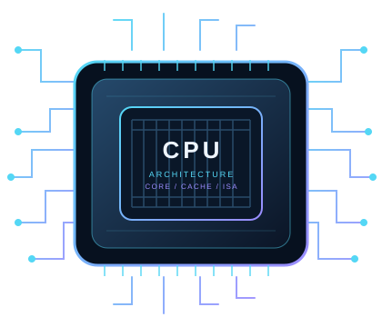

x86, x64 and ARM
x64 usually means 64-bit x86. Modern desktop CPUs commonly use x86-64; MediaTek and most Snapdragon mobile chips use ARM-based designs. “x32” is not a common modern product label.
Explore desktop, laptop and mobile processors in one place. Compare core counts, architecture, manufacturing process and performance indicators before choosing your next device.

Filter the sample catalogue, open details, or compare multiple chips.
Search by model, maker, device type or product family.
Benchmark values are marked “Not verified” until sourced from a specific Geekbench result. Process nodes and some mobile/server specifications can vary by SKU or device. ASML makes lithography equipment; Intel Foundry, TSMC and Samsung Foundry are examples of chip manufacturing foundries. Cross-category comparisons are enabled, but power, cooling, operating systems and benchmark versions differ greatly between phones, laptops, desktops and servers.
Select any one, two, three or four processors from the library.
Tip: compare chips from the same device category for a more meaningful result.
Understand the terms before deciding which processor fits your workload.
x64 usually means 64-bit x86. Modern desktop CPUs commonly use x86-64; MediaTek and most Snapdragon mobile chips use ARM-based designs. “x32” is not a common modern product label.
Names such as Intel 7, TSMC N4 or 3 nm are process-generation labels. A foundry manufactures the silicon; ASML supplies lithography equipment used by chip manufacturers and foundries.
Single-core performance can reflect responsiveness and lightly threaded tasks. Multi-core performance helps with workloads that can use many cores. Compare benchmark versions and test conditions consistently.
Three real URLs to support further research and satisfy the assignment's topic-link requirement.
Look up Intel processor cores, frequency, cache, power and supported technologies.
Visit Intel ARK ↗Find official Ryzen and EPYC processor information, platform details and product features.
Visit AMD ↗Review submitted CPU benchmark results. Check the exact chip, benchmark version and system details.
Visit Geekbench Browser ↗